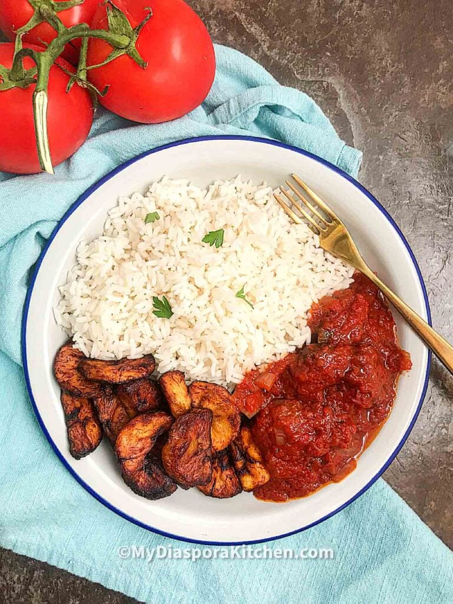

Tomato Stew

Tomato Stew
is a comforting and hearty dish that highlights the rich flavors of ripe tomatoes, often combined with a variety of vegetables and herbs. This stew is typically simmered slowly to allow the ingredients to meld together, resulting in a thick, flavorful sauce that can be served over rice, pasta, or with crusty bread.
Ingredients
- Beef
- Garlic
- Ginger
- Red bell peppers (Tatase)
- Tomatoes
- Scotch bonnet / habanero pepper (Ata rodo)
- Canola Oil
- Onions
Steps
- Season meat, boil and fry.
- Prepare the stew base: wash, cut and blend tomatoes, bell peppers, onions, and habaneros. Boil to reduce.
- 3: Fry chopped onions.
- Finish off the stew.
- Serve with rice, pasta, or bread.
Home